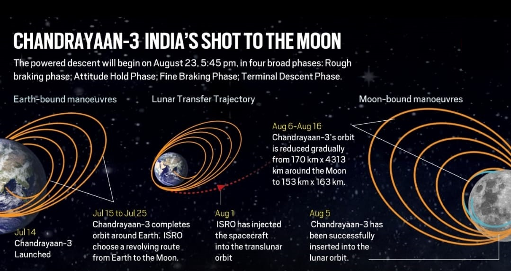
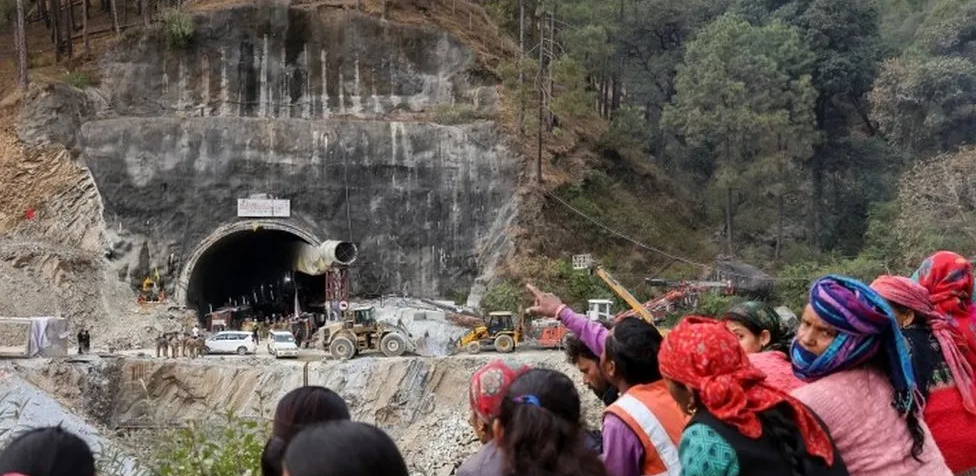

NewsAPIooOrg
TOP NEWS FROM INDIA
Echoes of Defeat: A Personal Reflection on India’s 2023 World Cup
The first one read, “India's loss in the 2023 World Cup final has echoes of West Indies' defeat in the 1983 World Cup final.” The parallels are .....

Chandrayaan-3 : India's Imperatives for Space Leadership
Chandrayaan-3's exploration of the lunar south pole signifies a new era in India's space endeavors.This achievement presents an opportunity ...
Teetotaller-Turned-Liquor Baron Lalit Khaitan Is India’s Newest
The 80-year-old liquor magnate is chairman of the $380 million (revenue) Delhi-based Radico Khaitan, best known for such beverages as 8 PM ...
Google Year in Search 2023: Who were the most searched people in India
As the year 2023 comes to a close, Google has once again revealed the most searched personalities in India. From Bollywood stars to cricket......When will the violence in
Peace will not come without acknowledging state complicity and making reparations, all while ensuring safety for the Zo community.

Uttarakhand tunnel collapse: Rescuers free 41
The workers were stuck for two weeks after a part of a tunnel they were working in collapsed.
NewsAPI Org is not responsible for the content of external sites